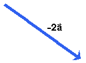

is multiplied by (-1), one
obtains a vector denoted -. It has the same
magnitude as , but points in the opposite
direction. This is illustrated below.
is multiplied by (-1), one
obtains a vector denoted -. It has the same
magnitude as , but points in the opposite
direction. This is illustrated below.
One can also multiply a vector with a negative scalar. E.g.,
if the vector is multiplied by (-1), one
obtains a vector denoted -. It has the same
magnitude as , but points in the opposite
direction. This is illustrated below.

When is multiplied by -2 (or
divided by -0.5), one obtains the vector -2 that is illustrated below. Its magnitude is two
times that of and its direction is
opposite to .
